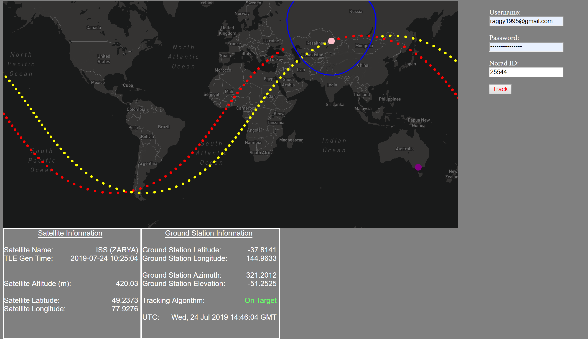
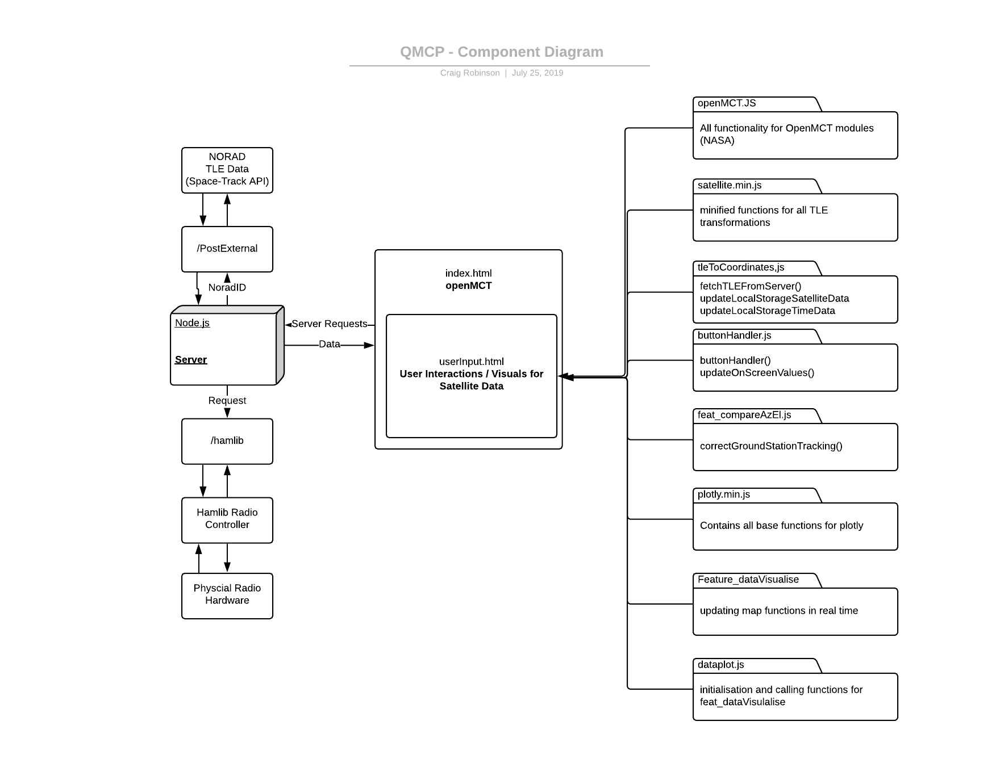

Introduction
Welcome to the Alto Mission Control (MC) documenation! This documentation will describe the setup instructions and requirements for the Mission Control system developed as part of the July Alto Training Program.
Features:
Tracking of any Satellite with NORAD ID
Orbital path for +/- 90 minutes
Heads up display of Satellite information for operational analysis
Tracking Algorithm plugin with 'HamLib' library for control of tilt-pan radio.

Setup Guide
The Alto Mission Control supports two deployment methods. Local and AWS.
Requirements: Node.js Space-track.org account
To Setup, use this code:
# First navigate to the desired install location then:
git clone https://github.com/altojulyspaceproject/Alto-July-Space-Project.git
cd Alto-July-space-Project
npm install
npm start
Usage
There are two main use cases for the MC software developed. NASA openMCT usage Direct Page Usage
Using openMCT:
Using web browser navigate to localhost:8080
Create a new webpage using openMCT modues
Add 'UserInput.html' as webpage module.
Using Direct Page
- Browse to localhost:8080/UserInput.html
Once navigated to, login using spacetrack account
Enter NORAD ID to be tracked e.g. 25544 for ISS
Press 'Track'
Ground Station Tracking (Hamlib Library)
Include some details about the bash scripts here
AWS Deployment
Handover process
AWS Architecture
Creating IAM Roles
Basically, a good way to give permissions to entities you trust (like other AWS services) They are more secure because they only issue keys for a short duration. Think of it as one-time access cards for guests that visit your building.
Go to IAM control panel
Go to roles
Select the type of entity based on your needs
Select the policies you want this IAM role to have
e.g. if you want the role to be able to access AWS CodeDeploy, this is where you add it in
Tag it however you want
After you’ve created the role
you need to edit the trust relationships, which allows you to edit which entity can assume this IAM role you just created.
.e.g if you want codeDeploy to be able to assume the role, you add in codedeploy.amazonaws.com
donezo, now you can assign this role to stuff, like EC2 instances
Creating an instance Basically servers for your application or website.
Go to EC2 control panel
Select launch instance
AIM and Instance type are dependent on your needs, can just go with the free tier
In configure instance
For network and subnet: choose the VPC and subnet you want (see guide above)
Choose IAM roles depending on what you created (see guide above)
In advance details, you can add scripts to be run as the instance boots up
In configure security group
This is like the firewall configs for your instance, can create a new one or choose the one you made before ( see guide above)
key pairs
this is the key needed to access your system via ssh (and other connections), either make a new one if you want more security or use an existing one.
add a new Elastic IP and assign it to the EC2
It's in EC2 dashboard, under network & security
After ‘allocate new address’, need to go to ‘actions’ tab and then ‘associate address’ and assign it to the EC2
can add scripts to run when the EC2 is created or just type in the commands below
#!/bin/bash
sudo yum update -y
sudo yum install git -y
curl -o- https://raw.githubusercontent.com/creationix/nvm/v0.33.2/install.sh | bash
export NVM_DIR="$HOME/.nvm"
[ -s "$NVM_DIR/nvm.sh" ] && \. "$NVM_DIR/nvm.sh" # This loads nvm
[ -s "$NVM_DIR/bash_completion" ] && \. "$NVM_DIR/bash_completion" # This loads nvm bash_completion
nvm install node
#to install cloudagent need to add policy to the role
sudo yum install ruby -y
sudo yum install wget -y
cd /home/ec2-user
wget https://aws-codedeploy-ap-southeast-2.s3.amazonaws.com/latest/install
chmod +x ./install
sudo ./install auto
Creating a pipeline Create codeDeploy application via codeDeploy control panel
compute platform is EC2
then create a deployment group inside that codeDeploy app
Service role is which IAM role you want to use (see guide above)
dont forget to add the codedeploy and s3 policy to the role
Environment config - choose EC2 instance
the tag group 1 value should be the EC2 machine you want this app to run on
Now we can create a deployment (for single deployments) or next step to create the pipeline
Choose Application is stored in GitHub (if its stored on github)
connect and input the commit id you want this deployment to pull from
FOR THIS TO WORK, need to install codedeploy agent on the EC2 instance
https://docs.aws.amazon.com/codedeploy/latest/userguide/codedeploy-agent-operations-install-linux.html
https://docs.aws.amazon.com/codedeploy/latest/userguide/instances-ec2-create.html
#!/bin/bash
sudo yum install ruby -y
sudo yum install wget -y
cd /home/ec2-user
wget https://aws-codedeploy-ap-southeast-2.s3.amazonaws.com/latest/install
chmod +x ./install
sudo ./install auto
create codePipeline
choose new service role, which will automatically create the service role for you
source provider is github (if you want it to deploy as github branch updates
use webhooks
can choose the branch you want to use
can skip build stage if you want
choose codeDeploy as the deploy provider
choose the application you created in step 1
choose the application group you created in step 1
it should run the pipeline when you first create it
Software Architecture
Basic Component Diagram 
Further Readings
TLE Data:
Important Concepts
Satellite Footprint :
A satellite being tracked as it orbits the earth needs to be in direct line of sight with a ground station in order to be detected, and to send or recieving signals. A detector on the ground will have direct line of sight with the satellite when it is within the ‘footprint’ of the satellite. The footprint is a projection of the area on a map that can has direct line of sight with a satellite. The link below shows a 3D toy model of this, where a vector points to the object in question and a plane divides the sphere into that part of the sphere from which the satellite can and cannot be seen (feel free to play with the sliders).
https://www.geogebra.org/3d/fqgdpnfz
This footprint can be represented by the 2D image below, where the horribly drawn circle is meant to represent a 2D even slice of the earth. The footprint can be represented by the distance to the edge of the footprint, swept around sphere, creating a circle of footprint, within which a ground station can see the satellite.